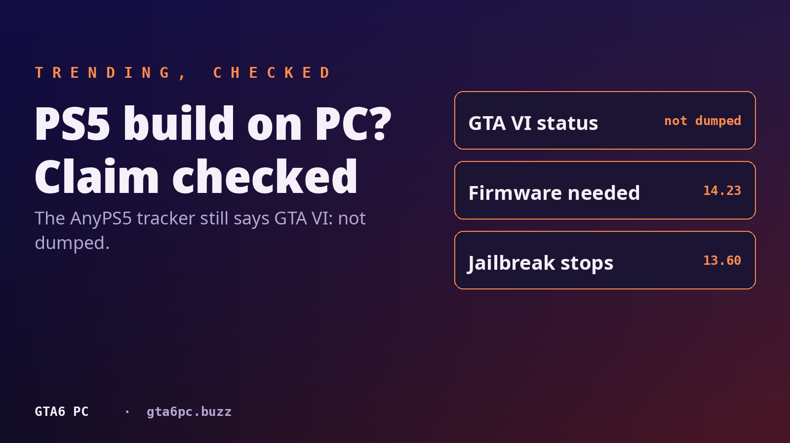

Did the GTA 6 PS5 build run on PC? Checked
This is the claim filling feeds right now: someone got the PS5 build of GTA 6 running on a PC. It sounds plausible because PS5 games really have started running on PC this year. So we checked it piece by piece.

The claim, and where it comes from
Since the November 19 console launch, a series of posts have claimed GTA 6 is already running on PC: an X account saying its experimental PS5 port reached the main menu, a clip claiming 25 fps on an RTX 5080 in Windows 11, and a steady stream of short videos. Each one spread fast, because the background story is real: in October and November, fan projects really did get PS5 games including Bloodborne and Astro Bot running natively on PC, and the PS5 version of GTA V has run on PC at 60 fps in a KytyPS5 test.
Check 1: the tracker says 'not dumped'
The AnyPS5 live progress stream, which follows PS5 games being converted to run natively on PC, puts GTA VI at the top of its dashboard. Its status today, November 23: Not dumped, needs firmware 14.23, jailbreak 13.60. In plain terms, nobody has a copy of the game to convert. A conversion project cannot run a game it does not have. That single line settles the 'successfully running' claim for the native route.
Check 2: the viral port video was GTA V
The most shared claim came from an X account, registered days earlier, saying its unofficial port of the PS5 version reached the main menu and crashed starting gameplay. Users examining the video found it used footage of GTA 5 running on PC. The account had no other posts and has not answered the finding. BattleTown's breakdown concludes there is no verified evidence of GTA 6 running on a computer.
Check 3: the RTX 5080 clip is unverified
A second clip claims GTA 6 running in Windows 11 at 24 to 25 fps on an RTX 5080, with a debug window and a frame counter. It names no CPU, resolution, settings or driver, nobody has reproduced it, and the report itself notes a video like this can be faked by playing a recording in a window with overlays. Treat it as a claim, not a benchmark.
What has genuinely run on PC
- GTA V, PS5 version: driven around Los Santos at a locked 60 fps on a mid-range PC in a test combining AnyPS5 with KytyPS5 graphics code, with graphics bugs.
- Astro Bot: reported on November 13 as the first PS5 exclusive converted to run natively on PC, built on AnyPS5 and KytyPS5 work.
- Bloodborne: converted in October through the same native approach.
- 161 games reaching gameplay on the AnyPS5 tracker, out of 573 reported, most not finishable yet.
Every one of those needed a game dumped from the player's own console. GTA 6 needs the same dump, and that is the step that has not happened. Our native build status tracker follows each of these milestones as they land.
Why this matters for you
The gap between 'PS5 games run on PC now' and 'GTA 6 runs on PC' is where the scams live. Pages use the real progress to sell fake downloads and fake ports. There is no download behind any of this progress that gives you GTA 6, and the projects themselves provide no games. See GTA 6 PC download: why every one is fake.
Quick answers
Has GTA 6 run on a PC?
No verified evidence shows GTA 6 running on a PC. The claims so far are a video traced to GTA V footage, an unverified clip, and Remote Play streams from a console.
What does 'not dumped' mean?
It means nobody has been able to copy GTA 6 off a PS5. The game needs firmware 14.23 and public PS5 exploits stop at 13.60, so no copy exists for PC projects to work with.
Which PS5 games have run natively on PC?
Through community conversion projects, titles including Bloodborne and Astro Bot have been reported, and the PS5 version of GTA V has run on PC in KytyPS5 tests. GTA 6 is not among them.
Last updated . We update this page when Rockstar announces anything new.